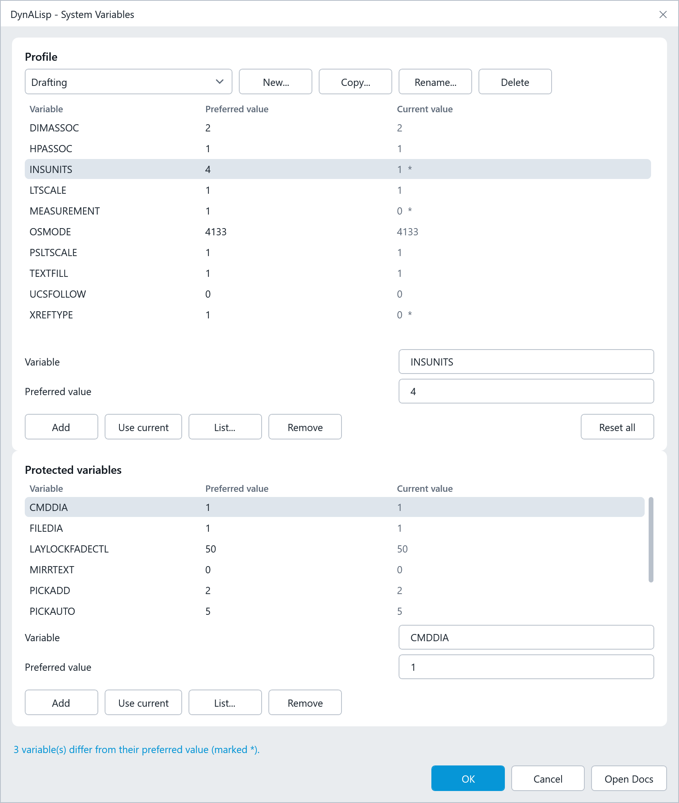

Variables système (System Variables)
| Syntaxe | DYL-SYSVARS |
| Licence | Licence publique générale GNU v3 |
Description
Gardez les variables d'AutoCAD à vos valeurs préférées dans chaque dessin. Enregistrez-les en profils, et protégez celles qui ne doivent jamais changer.

Utilisation
- Dans Dyl-Settings, activez System variables et cliquez son bouton carré, ou tapez Dyl-SysVars.
- Choisissez un profil, ou créez-en un avec New....
- Tapez une variable et sa valeur, puis Add. List... vous aide à en trouver une.
- Cliquez OK. Chaque dessin ouvert reçoit ces valeurs.
La fenêtre
- Profile – New..., Copy..., Rename... ou Delete un profil.
- Variables of the profile – chaque variable, votre valeur et sa valeur actuelle. Un * marque une différence.
- Use current – prend la valeur actuelle de la variable.
- Reset all – applique vos valeurs à ce dessin tout de suite.
- Protected variables – gardées dans chaque dessin, quel que soit le profil.

Liste des variables système
List... montre toutes les variables d'AutoCAD avec ce qu'elles font. Tapez dans Search pour en trouver une, puis double-cliquez-la. AutoCAD Help ouvre sa page d'aide.

Limites connues
- Vos valeurs s'appliquent à l'ouverture d'un dessin : une variable changée ensuite le reste jusque-là.
- La liste demande les Express Tools d'AutoCAD.